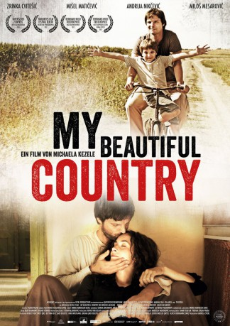
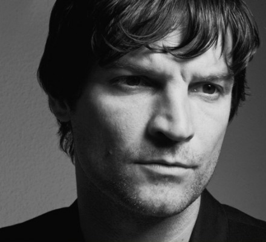

#4015 My Beautiful Country
 
 IMDB-Wertung: 7.0 / 10
IMDB-Wertung: 7.0 / 10  Metascore: 0
Metascore: 0 
Kosovo, 1999. As the civil war between Serbs and Albanians rages, hatred has replaced tolerance, and towns are brutally divided along ethnic lines. The young Serbian widow Danica lives with her two sons Vlado and Danilo in a predominantly Serbian community close to a small town which the River Ibar divides into an Albanian and a Serbian section. The death of Danica's husband at the hands of the Albanians has left profound traces in the family. Little Danilo has not spoken a word since, and Vlado has become a hooky-playing loner who dreams of owning a bright blue bicycle. In order to be able to afford it, he dives into the Ibar every day to catch fish which the kiosk owner buys from him for a few coins. In spite of the war, everyone in the community strives to lead normal lives. But one day, Danica returns from town to find a seriously injured Kosovo-Albanian soldier, Ramiz, in her house. Though aware that he is on the run from the Serbian militia, Danica takes Ramiz in and nurses him ...
Jahr: 2012
Dauer: 84 Minuten
FSK: 12
Land: Deutschland Studio: MovienetTonspuren:
Untertitel:
Auflösung: 720p (1280x720) Größe: 2099 MB
Genre: Drama, Krieg, Liebe
Regisseur: Michaela Kezele
Drehbuch: Daniel Taradash
Soundtrack:
Darsteller:
- Zrinka Cvitesic als Danica
-  Misel Maticevic als Ramiz
- Ljubomir Bandovic als Bicycle shop owner
- Milos Timotijevic als Igor
- Amos Zaharia als Ramiz brother
- Andrija Nikcevic als Vlado
- Milos Mesarovic als Danilo
- Ema Simovic als Nana
- Ana Markovic als Milena
- Danica Ristovski als Jelena
- Slavko Stimac als Kiosk owner
- Nebojsa Djordjevic als Ratko
- Stela Cetkovic als Choir Master
- Suzana Petricevic als Prostitute Vera
- Natasa Markovic als Prostitute Magda
- Eva Ras als Woman with cows
- Velimir 'Bata' Zivojinovic als Special Guest
- Marina Vodenicar als Bojana
- Goran Lovric als Kiki
- Miodrag Lovric als Bobo
- Kosta Bekric als Dado
- Pavle Simovic als Marko
- Djordje Ercevic als Danicas husband
- Vanja Lazin als Adem
- Bora Nenic als Clerk
- Rifat Rifatovic als Sniper
Datei: X:\2012(G-M)\My Beautiful Country (2012, FSK12, 1280x720).mkv seit 11.07.2016
Festplatte: HD 2012(A-M)
 Es gibt insgesamt 112 Filme in der Gruppe '2012(G-M)'
Es gibt insgesamt 112 Filme in der Gruppe '2012(G-M)'